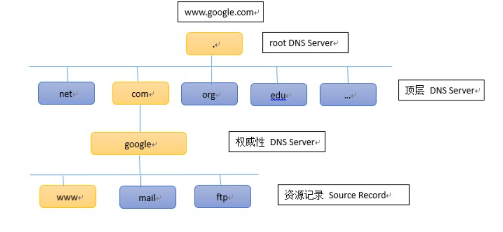

OSI参考模型第五至七层 应用层次原理与技术

第五层会话层(Session)
任务与功能
- 从网络进程到应用程序的转换
- 数据的呈现
- 主机间交流，包括会话的建立，管理（包含会话类型，即全双工或半双工）与终止
检查点(Checkpoint)
检查点是用于将一整个会话分成数个部分的节点，会话层逐段管理其状态，每一段称为对话(dialog)，对话分离就是对整个会话依次初始化，管理和终止，典型的例子如掉线一段时间之内可以重连
典型应用
- Network File System(NFS)
- Structured Query Language(SQL)
- Remote-Procedure Call(RPC)
- Apple Talk Session Protocol(ASP)
- DNA Session Control Protocol(SCP)
现在的很多进程已经很少严格按照session进行操作，但是分检查点的控制逻辑仍然被大量使用
第六层表示层(Presentation)
任务与功能
- 数据格式化(Data Formatting)
- 数据压缩(Data Compression)
- 数据加密(Data Encryption)
总体上表示层的功能是将数据以接收方主机能理解的方式呈现出来
数据格式化
表示层提供了两种不同的数据编码类型之间的转换，例如同样的01数据串，表示层可以按照Extended Binary Coded Decimal Interchange Code(EBCDIC)或者American Standard Code for Information Interchange(ASCII)来理解它的内容
图像数据格式
因特网常用的图像数据格式有Graphic Interchange Format(GIF)和Joint Photographic Experts Group(JPEG)，只要具备GIF和JPEG的阅读器的主机就可以正常浏览相关数据
多媒体文件格式
多媒体文件是储存声音，音乐和视频的文件，这些文件可以完全预下载后再播放，也可以一边下载一边播放，后者被称为数据流音频(Streaming Audio)
数据压缩与加密
数据加密在传输过程中保护信息
数据压缩则无损或一定程度损失地减少传输的数据规模
第七层应用层(Application)
任务与功能
作为OSI参考模型中距离用户最近的层次，应用层的主体功能是支持应用的会话模块。更具体地说，应用层的功能是
- 识别会话双方，并建立双方会话的可用性
- 保持协作的应用的同步
- 为出错后恢复的进程建立协议
- 控制数据正确完整
典型协议
HTTP
HTTP是面向事务的客户服务器协议，HTTP 1.0协议是无状态的(stateless，即不维护与客户端的连接，不记录用户的操作)，基于TCP进行操作，但本身是无连接的，一段时间没有操作之后会话就会自动断开
等待HTTP请求的进程称为HTTP daemon，缩写为HTTPD，常绑定于80端口，其在收到用户的请求后就将用户需要的问题件返回给用户
报文中主要的方法有GET和POST，前者用于读取统一资源定位符(URL)标识的信息，后者用于给服务器添加信息
FTP
是早期主流的面向连接协议，同样基于TCP进行操作，是实现一对多连接的典范
FTP会先在21端口绑定一个控制连接进程，当收到客户进程的连接请求后，就启动一个从属进程(Fork)，并将其绑定于另一个未被占用的端口上，这样21端口的侦听进程就能和所有的与客户进程保持连接的进程并发执行
TFTP
与FTP类似，但TFTP协议基于UDP进行操作，是不面向连接的服务，但实现简单
状态码约定
在网络传输的过程中常可见三位数字的状态码，其中2开头的状态码表示成功，3开头表示尚未完成，4开头表示出错，5开头表示网络错误
Telnet
Telnet是用于通过网络连接远程配置路由器/交换机配置的程序，但由于上述两种设备的键盘布局与远程配置的主机布局不同，Telnet在传输的过程中会将内容按照NVT编码进行转换
SMTP&POP3
$Simple~Mail~Transfer~Protocol$
$Post~Office~Protocol~version~3$
用户通过SMTP协议将邮件内容发送到@后指定的电子邮件服务器，委托邮件服务器进行转发，邮件服务器之间的通信同样使用SMTP协议，最后的邮件服务器转发给接收方主机时才使用POP3协议
MIME与SMTP的关系
SMTP传输过程中支持的编码格式仅有ASCII码（因为相对于二进制文件来说，ASCII码相对安全，不会出现攻击性代码），而用户传输的内容当中的编码格式并不一定是ASCII码格式，因此发件方在将邮件交付给SMTP之前需要经过MIME将编码格式转换为ASCII码
MIME是一种扩展编码，会增加邮件内容的字节量，加入的内容含有: MIME-Version(协议版本)，Content-Description(说明是否为图像、音频或视频)，Content-ID(邮件的唯一标识符)，Content-Transfer-Encoding(说明邮件编码方式)，Content-Type(说明邮件主体数据类型和子类型)
HTTP和SMTP是被最广泛认可的传输标准
SNMP
$The~Simple~Network~Management~Protocol$
该协议用于促进网络设备间管理信息的交换，常见于云服务器平台
DNS
$Domain~Name~System$
该协议用于在IP地址和域名（特殊字符串）之间建立一对一映射
网络加速原理(其中之一)
DNS解析过程是需要消耗时间的，如果在主机的域名与IP的映射表中加入目的IP，就可以跳过域名解析过程，从而达到加速目的
Domain Name
域名是一串特定的字符串，字符串可分为数个子串，子串间用.进行分割，位于左边的域名被包含在右边的域名之内（子域名），位于最右侧的域名称为顶级域名(Top Level Domain, TLD)，例如.cn和.com，左侧的子域名依次称为二级域名，三级域名
顶级域名只要通过申请就可以使用
Domain Name Server

域名服务器同样按照域名的分级形成树状的分层管理布局，国际管理组织只需要管理根服务器即可，顶级域名交由各自管理，每个服务器只需要清楚自己的下级域名即可
在提供域名解析服务时，如果目标域名在自己的子域名中，则可以直接返回对应映射的IP，否则就寻找负责相应域名的服务器，具体过程如下：
- 首先查询自己的上级服务器，如果上级服务器缓存了相关映射则直接返回，否则就递归查询直到最近的根服务器
- 如果根服务器记录了相关映射则返回，否则返回负责管理相关映射的服务器地址
- 上级服务器查询负责的服务器得到答案，然后返回并将映射记录在缓存中备查
应用层通信分类
所有的应用层通信都可以分为两类，分别是：
- 通过URL定位文件，连接后直接将相关文件传输给客户端，一段时间不传输数据后就断开连接，例如HTTP协议
- 面向连接通信，如果需要断开连接需要输入显式命令，例如FTP和Telnet